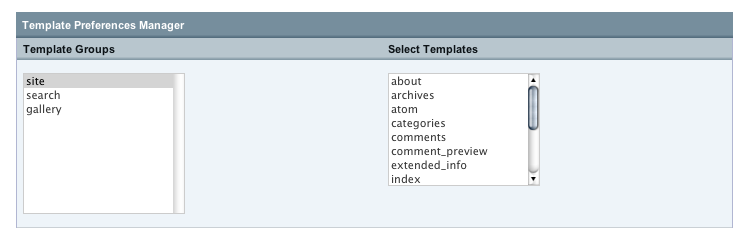
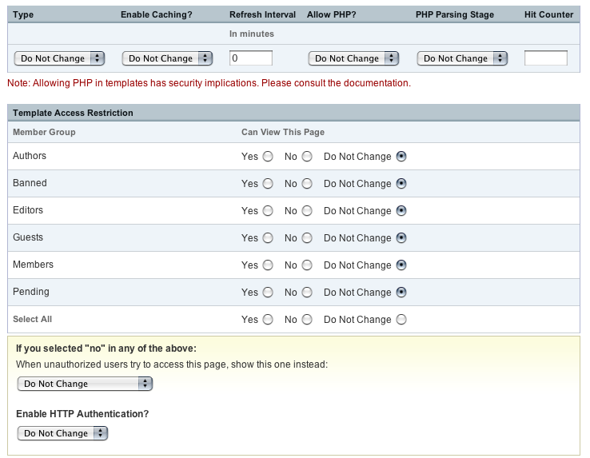

Template Preferences Manager
You now have the power to modify the preference and access settings for multiple templates even across template groups using the Template Preferences Manager. This allows you to easily make simple changes across multiple templates extremely quickly without viewing multiple pages.
Choose Templates
The first screen allows you go through the Template Groups and choose the templates you wish to modify. Remember that if you click on a multiple select list, you can use CTRL-A to select all in Windows and Command-A to select all on Macs.

Modify Preferences and Access
Simply change the preferences and access details for the templates you've selected and leave all other options set to "Do Not Change". Click on Update to apply your changes to the selected templates.

NOTE: With the Template Access Restrictions,
if you select Do Not Change for a group and it is already not allowed to view a template it will remain so. If it can view a template,
that will remain as well. In this way, templates with different combinations of groups access can all be modified to allow or disallow a particular group.